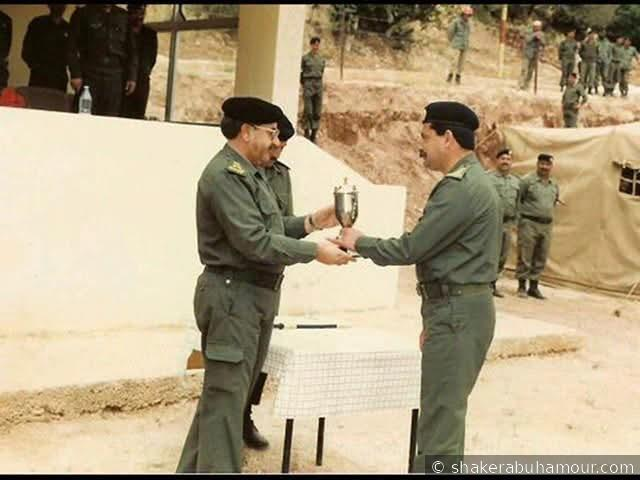
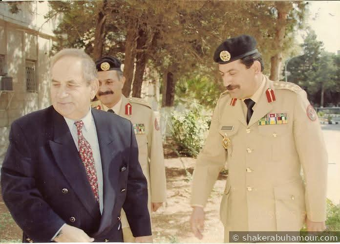
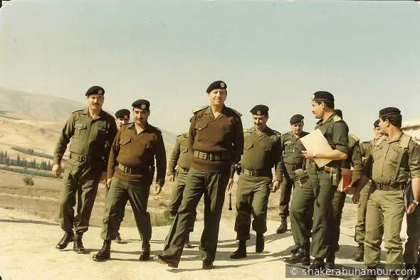
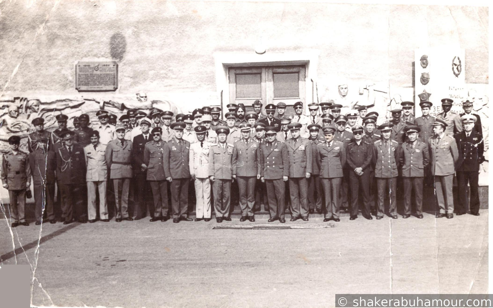
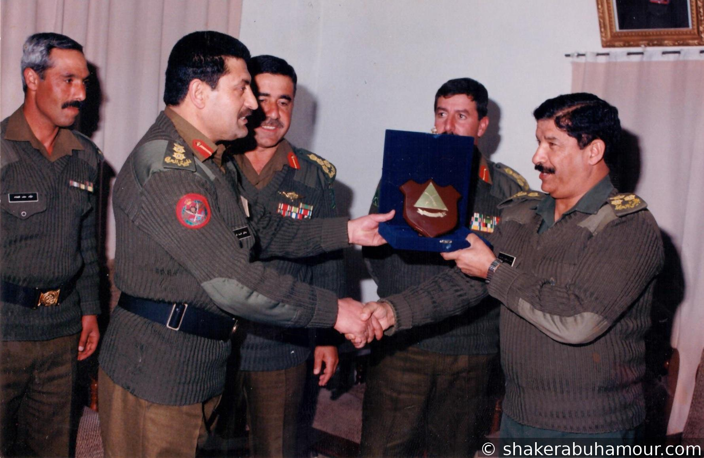
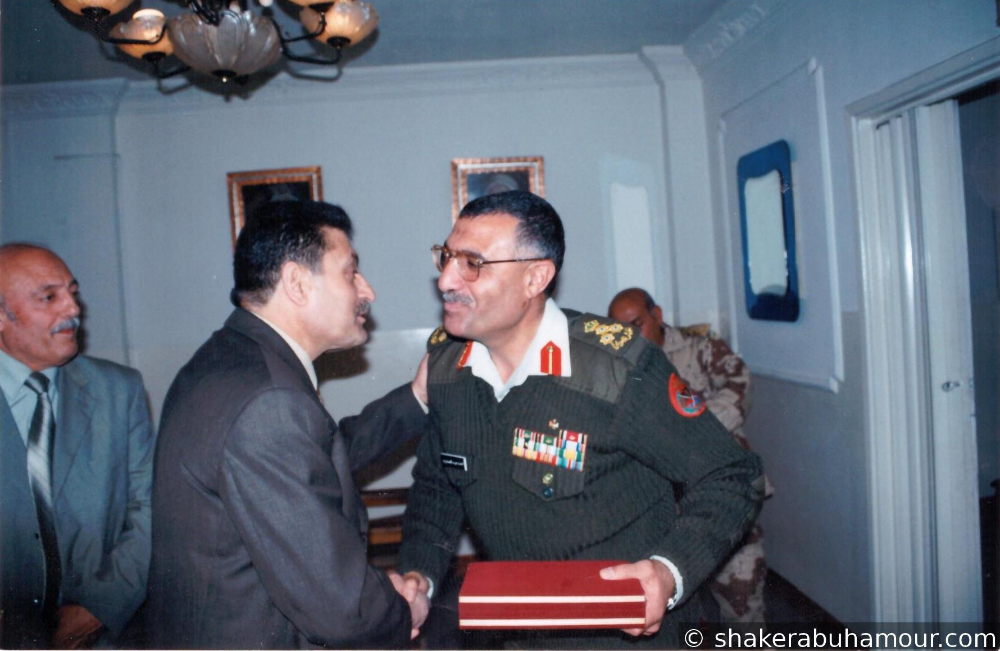
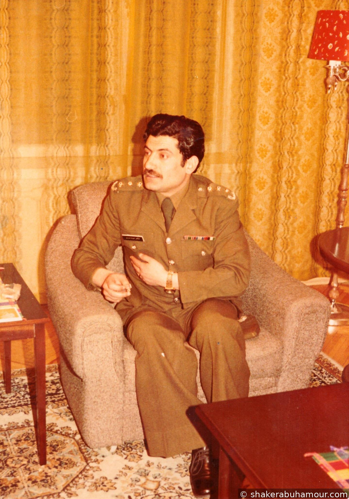
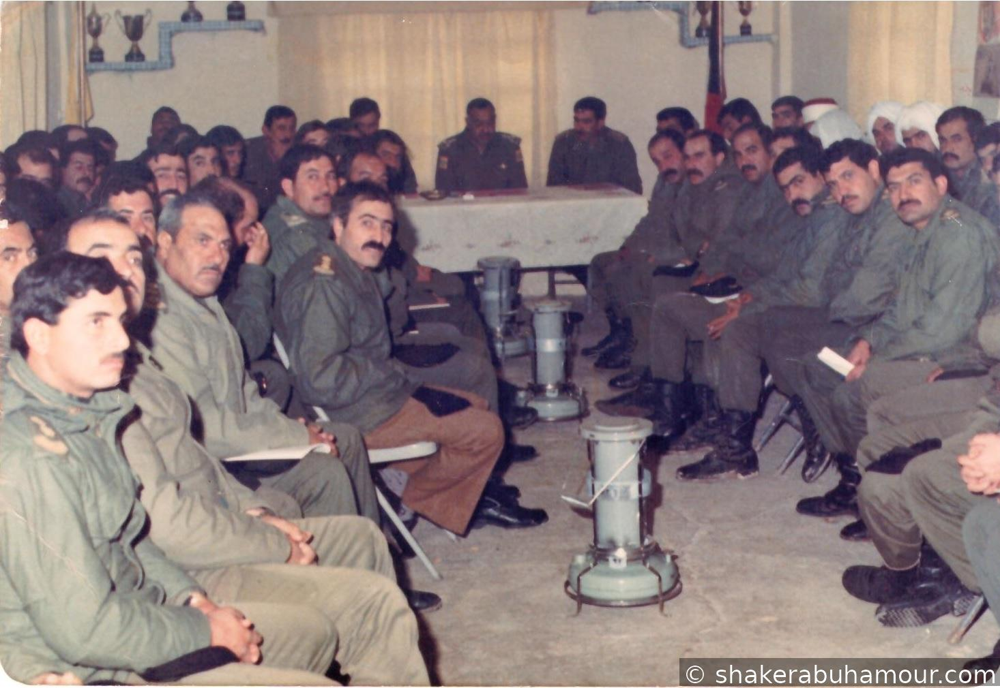

تاريخ ومكان الولادة: 1951 – مدينة السلط، المملكة الأردنية الهاشمية
الجنسية: الأردنية
اللغات: العربية، الإنجليزية، الروسية
الهواية المفضلة: كرة اليد
نبذة عن الشخصية
العميد الركن المتقاعد شاكر أحمد أبو حمّور، ضابط رفيع المستوى خدم في القوات المسلحة الأردنية لمدة (46) عاما، منها (26) عام في الخدمة العسكرية الفعلية، تنقل خلالها في مناصب قيادية وميدانية متعددة و(20) عاما أخرى في مجال الاعلام العسكري، يتمتع بخبره طويلة في الميدان وخبره واسعة في القيادة والادارة العسكرية بالاضافة إلى خبرته في مجال الاعلام العسكري، وهو من أحد الضباط الذين جمعوا بين الالتزام العسكري والخلق الرفيع. تميز بجديته العالية، وعمق إيمانه بالله، وحرصه الدائم على الصدق والأمانة في كل ما تولاه من مسؤوليات. عُرف بكرمه وتواضعه وشجاعته، وكان مثالاً للوفاء والانتماء للوطن، حيث ترك بصمة واضحة في كل موقع خدم فيه، سواء في الميدان أو في مجال الإعلام العسكري. جعل من الصدق والإخلاص منهجًا لا يتغير."
يقول الحق كما هو دون تزييف، ويُقدَّر لموقفه الثابت وصراحته النابعة من مبدأ، حتى لو كانت كلمته لا تعجب البعض، فهو لا يعرف التلون ولا يجيد الالتفاف، بل يسير على خطٍ مستقيم تُحترم فيه كلمته قبل أفعاله.
التحق بمدرسة المرشحين – القوات المسلحة الأردنية وتخرج برتبة تلميذ مرشح عام 1970 - صنف دروع.
تلقى العديد من الدورات العسكرية التأسيسية والمتقدمة داخل الأردن وخارجه، في عدة مجالات، كمجالات في القيادة، الإدارة، والتخطيط العسكري.
الفائز الأول بدورة الصاعقة رقم 39 عام 1974.
حاصل على بكالوريوس في العلوم العسكرية/ جامعة مؤتة.
المسيرة العسكرية
بدأ خدمته في وحدات الجيش العربي وتدرج في المناصب التالية:
قائد فصيل اشارة.
ركن/3 عمليات كتيبة مشاة آلية.
أركان حرب كتيبة آلية.
قائد سرية كتيبة آلية.
مساعد قائد كتيبة دبابات.
ركن أول إمداد وتجهيز فرقة آلية.
قائد كتيبة آلية.
قائد مجموعة إسناد إداري ولوجستي لفرقة آلية.
مدير لواء آلي.
رئيس شعبة الإعلام العسكري.
مدير تحرير مجلة الأقصى العسكرية (1993-1996).
رئيس الوفود الأعلامية لقوات حفظ السلام الأردنية (1993-1996).
ــــــــــــــ
ضابط ادارة ومساعد الملحق الدفاعي موسكو- الاتحاد السوفيتي (1980-1982).
الخبرة الإعلامية
ترأس الشعبة المسؤولة عن الاعلام في مديرية التوجيه المعنوي.
المنسق العام لبرنامج الجيش العربي.
مدقق ومعد برامج- اذاعة القوات المسلحة الأردنية.
ما بعد الخدمة العسكرية
أُحيل إلى التقاعد برتبة عميد ركن دروع عام 1996.
أعيد تعيينه مدنياً في عام 1997 كمدقق ومعد برامج في إذاعة القوات المسلحة الأردنية – الجيش العربي، والتي كانت قد بدأت عملها في الأول من آذار عام 1998 تحت اسم 'صوت النهضة'، قبل أن يتم افتتاحها رسميًا من قبل جلالة الملك عبدالله الثاني في الثالث عشر من تشرين الثاني عام 2001.
استمر في هذا الدور حتى عام 2017، وترك بصمة مميزة في العمل الإذاعي العسكري.
ساهم في اعداد وانتاج برامج توعوية وثقافية ذات طابع وطني وعسكري، ركزت
على رفع الروح المعنوية لدى الجنود وتوعية المجتمع المدني بدور القوات المسلحة.
عضو تجمع البلقاء للمتقاعدين العسكريين.
رئيس مجلس ادارة شركة الاورواسيوية للنقل البحري، وعضو مجلس ادارة لعدة شركات.
يحرص على تنمية المجتمع المحلي والتواصل والنشاطات الاجتماعية.
شخصية عسكرية بارزة، عُرف خلال خدمته بانضباطه، حكمته، شجاعته، وحنكته القيادية.
ترك اثراً طيباً في كل المواقع التي شغلها، وكان محل احترام وتقدير لدى الجميع.
ــــــــــــــ
زوج السيدة الفاضلة أسماء أبو حمّور (فضيه) والد كل من أحمد والضابط الجمركي حسن والدكتور زيد وليث والمهندسة الاء ونجم الدين والقبطان كمال والدكتوره آيه والدكتور محمد نور ومحمود خير وتسنيم.
ـــــ
صور من الأرشيف
1995 كتيبة أبو عبيدة الآلية /24 1987 جلالة الملك حسين بن طلال طيب الله ثراه - تخريج دورة قوات خاصة إحدى مناورات الفرقة الآلية/12 الملكية العميد الركن المتقاعد شاكر ابو حمور رئيس الوفد الاعلامي العسكري كرواتيا -1994العميد الركن المتقاعد شاكر ابو حمور رئيس الوفد الاعلامي العسكري كرواتيا -1994 إحدى مناورات القوات الخاصة الملكية 1995 كتيبة شرحبيل بن حسنة / دبابات 1985مساعد الملحق الدفاعي- موسكو 1982 العميد الركن المتقاعد عوده حسين الفرايه والعميد الركن المتقاعد شاكر ابو حمور 1974 إحدى الدورات في الولايات المتحدة الأمريكية 1974 الفريق الركن المتقاعد محمود حماد والعميد الركن المتقاعد شاكر ابو حمور اللواء الركن المتقاعد خالد هجهوج المجالي والعميد الركن المتقاعد شاكر أبو حمور 1977

اللواء الركن المتقاعد عيسى المجالي والعميد الركن المتقاعد شاكر أبوحمور سمو الأمير فيصل بن الحسين والعميد الركن المتقاعد شاكر أبو حمور 1993 2001 افتتاح اذاعة القوات المسلحة الأردنية

سمو الأمير رعد واللواء الركن المتقاعد الدكتور قاسم محمد والعميد الركن المتقاعد شاكر أحمد أبوحمور في استقبال سمو الامير حسن بن طلال- تخريج جامعة مؤته 1994 العميد الركن المتقاعد شاكر ابو حمور وبعض كبار الضباط في استقبال سمو الامير حسن بن طلال- صرح الشهيد 1996مساعد الملحق الدفاعي موسكو العميد الركن المتقاعد شاكر ابو حمور 1981أحدى مناورات لواء اليرموك الاليدورة صواريخ رد أي أمريكا 1975

رئيس هيئة الاركان المشتركة سمو الأمير زيد بن شاكر في زيارة تفقدية لكتيبة أبو عبيدة الآلية 1988 كرواتيا 1994قائد مجموعة الاسناد الاداري واللوجستي للفرقه الآلية/12 الملكية العميد الركن المتقاعد شاكر أبو حمور انذاك مع مجموعة من الضباط 1990الاتحاد السوفيتي 1981العميد الركن المتقاعد شاكر ابو حمور كرواتيا -1994الفريق الاعلامي 1994مساعد الملحق الدفاعي موسكو العميد الركن المتقاعد شاكر ابو حمور 1982مساعد الملحق الدفاعي موسكو العميد الركن المتقاعد شاكر ابو حمور 1982الاتحاد السوفيتي 1982

الاتحاد السوفيتي 1982 جلالة الملك حسين بن طلال طيب الله ثراه خلال تخريجه دورة كلية القيادة والأركان 1986 الفرقة الالية الثانية عشر الملكيةرئيس هيئة الأركان المشتركة سمو الأمير زيد بن شاكر في زيارة رسمية لكتيبة أبو عبيدة الآلية عام 1988، وكان في استقباله قائد الكتيبة آنذاك العميد الركن المتقاعد شاكر أبو حمور العميد الركن المتقاعد شاكر ابو حمور رئيس الوفد الاعلامي العسكري كرواتيا 1995كرواتيا 1994 كرواتيا 1995

الفرقة الالية 12 الملكية

مديرية التوجيه المعنوي كتيبة شرحبيل بن حسنة دبابات 1984صورة العميد قيادة الفرقة الالية الثانية عشر الملكيةصورة العميدكتيبة ابو عبيدة الالية 1987كرواتيا 1995القيادة العامةالاتحاد السوفيتي 1982 2006 مديرية التوجيه المعنويلواء اليرموك الاليكتيبة ابو عبيدة الالية/24كرواتيا

موسكو 1981كتيبة شرحبيل بن حسنة دباباتقائد كتيبة ابو عبيدة الالية مع مجموعه من ضباط الأمن العامالعميد الركن شاكر ابو حمور كرواتيا 1995العميد الركن شاكر ابو حمور كرواتيا 1995كرواتيا 1994 1990 الفرقة الالية/12 الملكية

لواء اليرموك 1984صورة العميدصورة العميد الاتحاد السوفيتي 1982 كتيبة ابو عبيدة الالية صورة العميدصورة العميدصورة العميد سمو الأمير مرعد بن رعد في زيارة رسمية للواء اليرموك الالي كتيبة شرحبيل بن حسنة دباباتصورة العميد كتيبة ابو عبيدة الالية 1989كرواتيا 1994 19911996